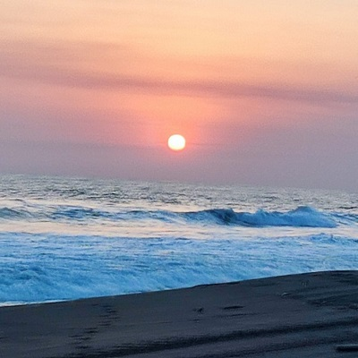

Locations
Common Requests
Here you will find a list of the most common places we travel to, keep in mind that these are just the popular ones, so do not hesitate to ask if your destination is not listed here.
Port of San Jose
This is one of the most common requests because the beach is one of the most comfortable places to enjoy vacation. The tropical weather can be enjoyed in any season of the year, the abundant seafood, and the convenient closeness to Guatemala City, make this location the perfect choice for a one-day trip.
Antigua Guatemala City
If you want to know more about our history, this city is one of the best choices. You will never get tired of the vintage vibes you will be getting the whole time. This city was the original “Guatemala city” the first location of our capital city. The architecture has remained the same ever since it was founded. It is like traveling through time!
Panajachel (Atitlán Lake)
Many say that Atitlan Lake is the most beautiful lake in the world, and they may not be mistaken. Come find out yourself by visiting this magic village called Panajachel, located just at the lakeshore. Enjoy the beautiful landscape of this magic lake, and forget the stress of the everyday tasks for a moment.

Quiriguá Ruins
Find yourself trapped in the mysteries of the Mayan culture. These are one of the most famous Mayan ruins in the whole country, due to the nature of its architecture. It has very tall stand-alone monuments called “Estelas”. One of them (Estela “A”) is considered the tallest stand-alone monument in the whole American continent.